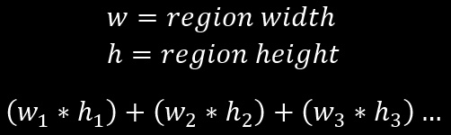

How is the Riemann Sum Calculated?
As the number of regions(partitions) increases, the approximation becomes closer and closer to the actual answer.
No matter how many partitions we create, we will never reach the actual area. We will always be some tiny amount away.
This addition of the regions produces a long summation:

Since this notation can become very long and repetitive, a special symbol is used to describe the sum of these terms that
follow a similar pattern:
The first thing we can do to simplify this equation is to remove the region width term. This is because the width of every
region is the same by the definition of the Riemann Sum. The width term can be pulled off of each term, which allows it to
come out of the summation procedure as a constant multiple:
Our next step is to solve for the w and h terms to make our equation generic to any function. Our region width is simply
the length of the interval divided by the number of regions. The height of each region is the function value of the left side
of the current region. This is simply the left bounds plus the ratio of current region over total regions times the total interval.
Plugging all of this in yields this duanting equation:
This can be used to calculate Riemann Sums for normal intervals of a function. The higher the value used for r, the more accurate your
answer becomes but at the tradeoff of taking longer to compute. For those familiar with programming, the summation can be thought of
as a for loop that loops r times.